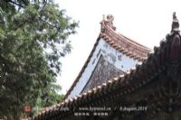
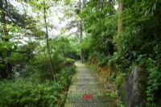

巫山
自然风光独树一帜。闻名中外的长江三峡，巫山就拥有巫
峡的全部和瞿塘峡的大部。巫峡以幽深秀丽闻名于天下，峡深
谷长，迂回曲折，著名的"巫山十二峰"列坐大江南北，尤以神
女峰最秀丽。峡中那云雨之多，变化之频，云态之美，雨景之
奇，令人叹为观止。 巫山小三峡山，奇峰怪石千姿百态，一山
一水、一石一景、一草一木无不可以成诗，无不可以成画。巫
山马渡河小小三峡奇峰多姿，碧流如镜，更是引人入胜，有惊
无险的回归大自然参与式漂游，令中外游客流连忘返，被游人
称为"中国第一漂"。1997年11月8日，长江截流后，因有导航明
渠通航，原水位无任何变化，长江三峡、巫山小三峡、小小三
峡美景依存，毫无影响，不存在"告别三峡"之说。2009年，三
峡大坝竣工后，储水到175米时，长江水位比现在上升70至80米
，对景区影响不大，巫山将永远是一个值得人们向往的旅游胜
地。
|
|
大昌民居位于巫山县大昌镇含城门，时代为清。巫山大昌镇位于长江支流大宁河的北岸,南距巫山县城约30公里。据《巫山县志》记载,晋太康元年(280年)在此设泰昌县,北周时因避讳宇文泰而改名为大昌,清康熙九年(1670年)并入巫山县。现大昌城内建筑多为清代所建,大体上保持了清代大昌城的风貌。2000年，大昌民居被重庆市人民政府公布为第一批重庆市文物保护单位。 |
|  |
庙宇天主堂位于巫山县庙宇镇禹王宫居委会，时代为1903年。2019年，庙宇天主堂被重庆市人民政府公布为第三批重庆市文物保护单位 |
|  |
南陵古道位于巫山县巫峡镇南陵居委会至建平乡春晓村，时代为清。2019年，南陵古道被重庆市人民政府公布为第三批重庆市文物保护单位。 |
|